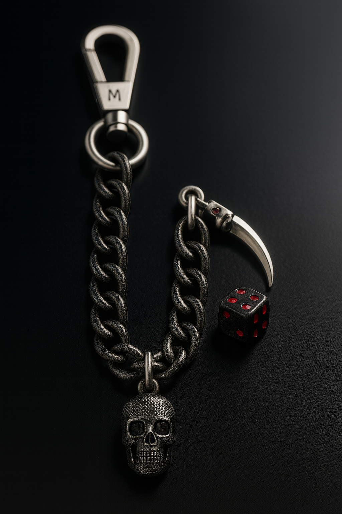

Vice Link Charm Chain
A luxury statement piece, forged in solid 925 sterling silver. The Vice Link Chain features heavyweight curb links paired with a removable branded charm — sculpted with Sins of the Past™ motifs of skulls, dice, and scythes. Each piece is handcrafted in New York’s jewelry district and polished to a bold, dark-edged finish.
Material: 925 sterling silver (nickel-free, hypoallergenic)
Chain: Classic curb link, 5.3 mm width, available in 18", 20", or 22"
Clasp: Premium lobster clasp, built for strength
Charm: Custom sculpted Sins of the Past™ motif
Finish: Polished with oxidized details for depth
Every Vice Link Charm Chain is produced in limited runs, with optional serialized engraving and certificate of authenticity.
- Material: 925 sterling silver
- Chain length: 18", 20", 22"
- Secure lobster clasp
- Branded charm with reaper motif
Care: store in pouch, avoid moisture & abrasives.